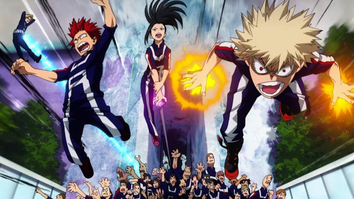

Disclaimer: This review covers "My Hero Academia," Seasons 1, 2 and 3, with a total of 63 episodes.What anime will represent the 2010's decade? Critical sucess aside, action-fueled shonen anime dominated the mass market, thanks to broadcast television in America, and the relatively large age-demographic it could target. We had "Dragon Ball Z" and "One Piece" in the 1990s. We had "Naruto" and "Bleach" in the 2000s. In the 2010s, American companies were eager to find the new hit to replace these long-running franchises that could sell millions in backpacks and t-shirts. Would it be "Fairy Tail?" "Black Clover?" Perhaps the excessively violent "Attack on Titan?" None of these shows really had enough mass appeal to take the throne.But then "My Hero Academia" appeared in 2016. It came from Studio Bones, and it wasn't their first time making an anime of this genre (their underappreciated "Soul Eater" is still a personal favorite). It was a show and manga largely inspired by American super-hero comics. Not only did Funimation license it, but they marketed it to kingdom-come. It was effective: this mixture of a good production studio, internationally-marketable premise, and an experienced English-licensor allowed the show to keep going far beyond it's intended end. The first season was 13 episodes, and each subsquent season would be a full 25, with 4 seasons and counting as of the time of this writing. Without a doubt, this was the lunchbox-seller American businesses had been waiting for. For reference, I don't tend to watch these shonen-anime, due to their dendency to appeal to the lowest-common-demoninator, and due to their sheer length: I like the stories I watch to have an ending. Coincidentally, It's also the reason I don't actively read comics books featuring "Batman" or "Spider-man." But I at least know who those characters ARE, and similarly, it seemed a shame to completely miss "My Hero Academia," even if I knew I would never watch it to the very end. For curious fans, this is exactly the type of show you want to stream online (replacing tuning-in every week on cable television) rather than trying to purchase DVD's of the entire series. Even so, Funimation's initial Bluray/DVD combo packs are generously packed with bonus features, and while it hasn't happened yet, it's in their pattern to eventually package the series in cheaper sets. I lucked out, discovering a Walmart-exclusive collection, packaging the first 3 seasons (five 12 or 13 episode-sets) in their original packaging, plus a bonus collector's pin, for only $69.99: that's about $14 each for sets that rarely go on sale for less than $30, or about $1.11 per episode. That's as good a price as you'll likely ever get, so it's worth visiting your local store to see if this rare collection is available, if you're in the market to have "My Hero Academia" on your shelf. It was also a good excuse for me to quit with Season 3, a point that, based on reviews, seemed as good a stopping point as any. ANYWAY...The story is about Izuku (nicknamed "Deku"). He lives in a modern alternate world where, defying scientific understanding, people began developing unique super-powers, known as "quirks." Society reaches a point where more than half of the human race has a quirk of some kind, and super-heroes and villains are a common sight (while some simply use their powers for everyday tasks). Izuku is a passionate fan of these brave and strong heroes, but is devasted as a child when a doctor tells him the truth: "It's not happening." He doesn't naturally develop any quirk at all, and his dreams of one day becoming a hero are dashed at roughly six-years of age. The beginning of "My Hero" are difficult to watch for portraying this hard truth of life. For being born "normal," he is ostracized by classmates, especially when he insists he wants to grow up to be a hero. He's bullied by cool kid Bakugo, whose development of a powerful fire-quirk gives him a poor attutide for the years that follow. Everyone in Izuku's life, from the doctor, his teachers, and even his own mother, don't offer any hope or words of encouragement: the day Izuku learns of his lack of power, his mother hugs him tightly, crying how she "wished things could be different." Shown as a flashback, modern teenager Izuku recalls the moment: "Mom... that's not what I needed you to say." Despite it all, Izuku's passion towards heroes doesn't wane. He determines he simply has to work harder, and carefully studies the world's heroes, their strengths and weaknesses. In the year before he enters high-school, he plans to take the entrance exam for "U.A. High," a prestigious school dedicated to training heroes, despite everyone still taunting him for daring to dream such a thing. Through a chance encounter, Izuku meets "All Might," the world's most powerful hero (the universe's equivalent to "Superman"), but even he offers no encouragement: behind All Might's brave smile, he's an aging hero falling apart at the seams, and knows Izuku would simply die in battle should he try to save anyone.These first two episodes of "My Hero" make a fantastic self-contained arc, worth watching even if you have no intention to continue with the rest of the series. After a villain threatens Bakugo, Izuku proves himself by simply being brave, changing All Might's attitude about what truly makes a hero. I am a cynical man, and lament society's tendancy to encourage children beyond their means: while anyone is capable of training and studying to accomplish anything, it's a virtual guarantee that they won't be given the opportunity to actually do so in their lifetimes, and it would have been far more helpful to be honestly told this early in life (it would have helped me, at least). Regardless, this setup in "My Hero" is infinitely inspiring. ... and then we get into the real story. Part of All Might's capabilities involves the ability to pass down that power, and in his ever-weakening state, he needs a successor. After Izuku proves himself, All Might is happy to offer his DNA ("eat my hair!") to finally give him a quirk. An experienced adult steps in and gives Deku the "opportunity" he needs; the show steps away from teaching a life lesson for the sake of escapism, possibly giving the wrong impression to young viewers who will never find an "All Might" to reach out their hand. Anyway, Izuku has what he needs, a quirk more powerful than anyone else's... but it's so powerful, that a massive jump instantly breaks his legs, and a punch breaks his arms. Through the magic of anime, Izuku has resources that allow him to heal by the next episode, but it's still incredibly painful, and in a real fight, only gives him one shot to fight back before he's out of commission (the show actually shares several elements with "One Punch Man," another super-hero anime). Just barely, Izuku gets into U.A. High, and All Might happens to be a new teacher on staff, but the boy will have to learn how to control and limit his powers to prove himself in the intense classes he takes. And Bakugo, the bully, also gets accepted, but having known Izuku for a long time, he's horrified to see his power. Deku was always quirkless... how could he now be more powerful than me? Bakugo represents the far opposite of Izuku, being encouraged from the start, to the point where he's become completely arrogant, assuming he could do anything, assuming he was the best in the world. The thought that someone close to him could suddenly best him makes Bakugo feel like he's been lied to all these years, and seeing the strength of the rest of his new classmates is a huge wakeup call. The rivalry between Izuku and Bakugo becomes a huge core element for the rest of the series.  "My Hero Academia" has an impressively strong core-set of characters for a shonen-anime, and a fool-proof premise. Who wouldn't want to see dozens of super-hero kids learn how to use their powers in battle, guided by a series of quirky super-hero teachers? We've seen it in Marvel's "X-Men." We've seen it in American films "Sky High" and "Zoom." But "My Hero" inevitably suffers from virtually every fault of a weekly shonen-cartoon. There's a massive cast of characters, most of them having absolutely bizarre designs or traits to make them distinct from each other, with only 3 or 4 characters in the whole show actually being crucial to the adventure. Production values are lazy, often using either limited animation or repeating previous scenes as flashbacks (or frequently as reminders of what happened in the last episode) in order to stretch the budget for what would be a seemingly limitless series. Individual fights take up multiple episodes, with side characters explaining every detail out loud as needless exposition. After the first few episodes of Season 1, the rest of the season feels like needless padding: I get that school is a long journey, but it feels like we're just meandering a bit much here. Simply put, we have a journey, but not an actual story. It was frustrating to see these issues from Studio Bones. They've made a lot of anime, and it can vary greatly in quality, but generally, their animation is pretty great in action scenes, and "My Hero" has plenty of them. And they've shown with "Soul Eater" that they can do great character development and art design in a long-running series. While a handful of their distinct strengths still remain, it also felt like they weren't truly taking this production seriously, or else looking to other similar shows for ideas to cut costs..... I should note this improves after Season 1. Wikipedia handily mentions that Studio Bones has multiple internal teams, and while the team responsible for their most visually-iconic shows was partially involved in the first Season, they take over fully for Seasons 2 and 3, likely due to the show's success. Animation remains economically limited, but they do more within that limitation, and there are notably more moments of great animation in fights. This seems to progress with every season; Season 3 has enough great moments of animation for this to be one of the best-animated long-running action series (even if that "sakuga" makes up less than 1% of the total content).Thanks to or in spite of the story, the show is consistently fun to watch. The attention given to each hero and their unique powers keep things interesting, beyond simply watching who can give a stronger punch. In an inspiring choice, All Might is described to be American, yelling out moves such as "DETROIT SMASH." It's a clever chance to make the show feel more international, while giving credit to American comics as the main inspiration.Despite later seasons being 25 episodes long, there's a pretty clean cut every 12 episodes, so I felt like I watched five instead of three (an important consideration if you're collecting these on home video and don't know where to stop). Season 2 Part 1 is dedicated to the "U.A. Games," a long tournament-arc story that we rarely see outside shows like "Dragon Ball," "Naruto" or "Beyblade" and "Yu-Gi-Oh." It's one of the few types of arcs I enjoy in long-running anime, so it was a treat to watch it here. Part 2 focuses on one-week internships, featuring a one-arc villain that causes cultural shocks that remain for the rest of the series. Season 3 Part 1 is about training camp, which goes awry with the assembling of the extended "League of Villains," as well as finally presenting whom I assume is the master bad guy of the story, resulting in All Might's final fight (SPOILER: he technically doesn't die, so don't fret). Part 2 then returns to school with a new compettion (similar to Season 2) to earn temporary Hero licenses... disappointing but entertaining enough, and worth watching for finally having Deku and Bakugo confront one another in an immensely satisfying character arc. Which arc is the best or worst? Season 1 has a great opening set of episodes, but is otherwise dull. The others are entertaining enough (it's hard to hate characters after sticking with them for over 50 episodes), but the clear standout for me was Season 3 Part 1. To put it simply, every great hero story needs a great villain, and even though villains had already appeared, nothing compares to when their leader in the shadows, "All For One," finally comes out to play. His presence and power scares everyone, his dialogue plays directly to mirror All Might's catchphrases, and that battle between him and All Might is one of the series' best moments. After that, we start getting a couple episodes that, while interesting, seem to come out of nowhere (one Season 3 episode is an unabashed plug for a tie-in theatrical film, another is a day-in-the-life of one side-villain). It definitely reaches a point where it follows the story-telling style of American franchise comics, able to draw out and add drama for the sake of it, with the potential to play out for hundreds of episodes to come. Those episodes may be great, but I'm not gonna stick around to see it all.Visually, "My Hero Academia" is loud and bold. Colors are bright. Environments have a comic-book posterized-style to them. Character faces are expressive. There's nothing subtle about the visuals, but it makes the show feel unique to other anime, and perhaps was necessary to make the series feel a little more like an American monthly-issue comic series rather than just another Japanese cartoon. Animation is frustratingly limited, except for the action scenes: while not all of them get the same treatment, a few definitely animate with better detail, and keyframes aside, a lot of thought is put into the choreography of the fights. I was surprised to not be blown away by the opening or ending theme music (aside from Season 3 Part 1's electro-club opener), but the background tracks are pretty great. The English dub is plenty good, but like the show, isn't subtle: your choice of what language you watch it in will depend entirely on your preference for how Deku, Bakugo and All Might sound. In conclusion to this very long review: "My Hero Academia" is good. But it's not "great." It would be difficult to even justify it as "very good." Perhaps hype ruined my experience a little. This opinion is coming from someone who has watched hundreds of anime series, and from someone who would probably rate other "popular" shonen anime far worse than this. We're talking "Naruto" and "One Piece" being at the bottom 10% of what I've seen, if only for butt-ugly art design, annoying characters, and a "story" that only serves to waste my time. But there's a place for that type of show. There's a reason infinitely-running superhero comics are so popular in America. "My Hero Academia" is popular for similar reasons, and unlike some other popular anime, it justifies itself well enough, and is worth sitting through those first 50+ episodes. But even within this genre alone, there are better shows to try... I'll bring up "Soul Eater" again. That being said, even if this doesn't live up to the best from Studio Bones, when taking the average... they're the undisputable kings of shonen when they choose to enter the fight.
- "Ani" More reviews can be found at : https://2danicritic.github.io/ Previous review: review_My_Girlfriend_is_Shobitch Next review: review_My_Neighbor_Totoro